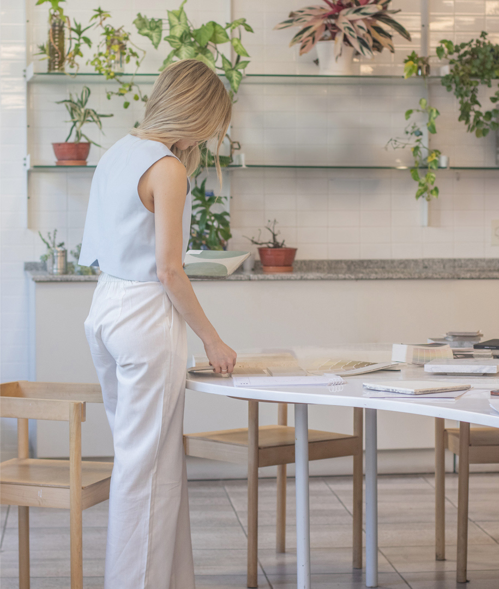

Soy Melany D’Angelo, arquitecta independiente y fundadora de arq.melanydangelo.
Después de años de formación y experiencia en estudios de arquitectura, decidí emprender mi propio camino para desarrollar un estudio que refleje mi mirada personal: cercana, sensible y comprometida con cada detalle del proceso.
Durante este recorrido, participé en proyectos residenciales, comerciales e intervenciones de interiorismo que me permitieron entender que cada obra es única, no solo por lo que se ve, sino por lo que se vive en ella.
Hoy elijo trabajar desde una escucha activa, integrando lo técnico con lo humano, buscando que cada espacio tenga identidad, funcionalidad y una lógica propia que lo haga habitable en el tiempo.